Clear, practical tools for keeping kids safer around water.
This page gathers simple, actionable guidance for parents, caregivers, and communities. It's not a substitute for professional trainingbut it can help you take the next right steps toward safer baths, pools, and oceans.
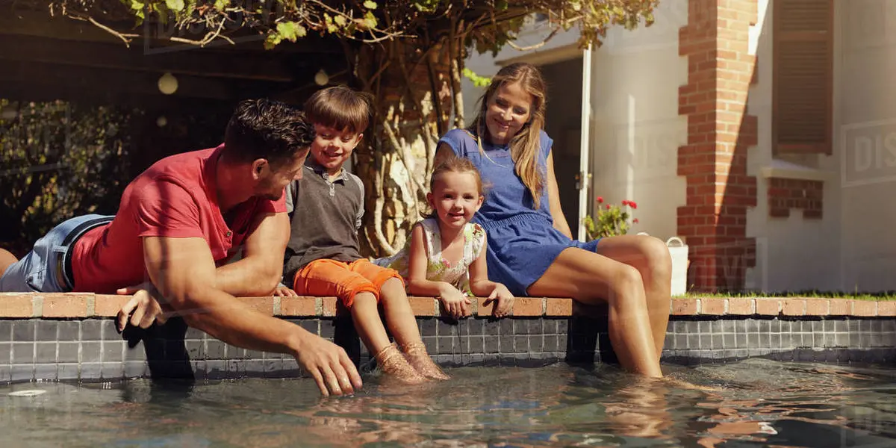
Core Water Safety Checklists
These checklists offer starting points for common settings where infants and children encounter water: the bath, the home or backyard, and natural water like lakes and the ocean.
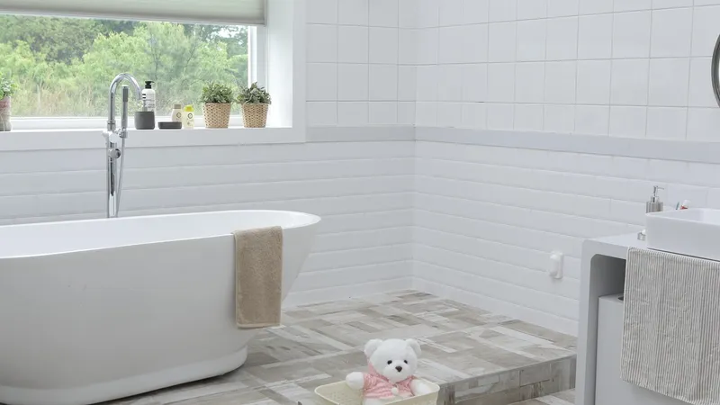
Infants & toddlers in the bath
- Always stay within arm's reach. No exceptions, no quick errands.
- Gather towels, soap, and supplies before water is turned on.
- Keep water level shallow; infants do not need deep water.
- Empty tubs, buckets, and basins immediately after use.
- Teach older siblings that "watching the baby" never replaces an adult.
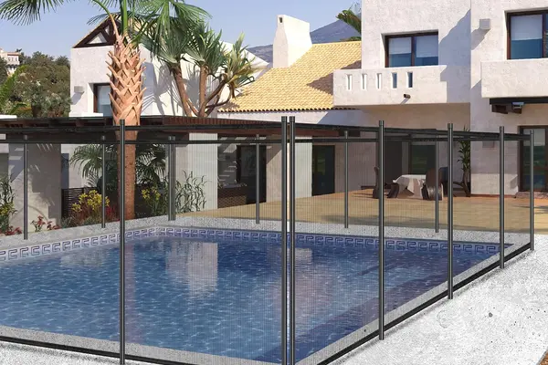
Pools, hot tubs, and yard hazards
- Install four-sided fencing with a self-closing, self-latching gate.
- Use locks or alarms on doors that lead directly to pools or bodies of water.
- Store buckets, kiddie pools, and tubs upside down when not in use.
- Keep toys away from pool edges to reduce temptation for young children.
- Designate a sober, undistracted "water watcher" during any water play.
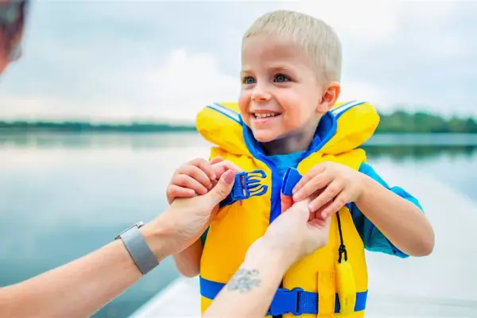
Open water & currents
- Use properly fitted life jackets approved for your child's weight and size.
- Stay close. Waves and currents can move children faster than expected.
- Swim only in designated areas with lifeguards when possible.
- Learn local risks (rip currents, drop-offs, tides, hidden objects).
- Model safe behavior: no diving into unknown depths, no swimming alone.
Layers of Protection
No single measure (fencing, supervision, or lessons) is enough on its own. Drowning prevention works best when multiple layers are in place at the same time.
- Barriers: Fences, gates, door locks, and alarms that separate children from water.
- Supervision: A dedicated adult "water watcher" with no distractions.
- Skills: Age-appropriate swim lessons and water survival skills.
- Equipment: Life jackets, rescue equipment, and phones nearby.
- Education: Teaching kids water rules early and repeating them often.
Emergency Readiness
The goal is always prevention. But if something does happen, being prepared to respond quickly and calmly can make a significant difference in outcomes.
Recognize the emergency
Drowning is often silentno splashing, no yelling. If a child is missing, always check water first. Trust your instincts if something feels wrong around a pool or bath.
Call for help
In a suspected drowning or near-drowning, call your local emergency number (such as 911 in the U.S.) immediately. If others are present, assign someone specifically to make the call.
Begin appropriate aid
Learn CPR from accredited providers so you're prepared before an emergency. This site cannot teach CPRbut it can encourage you to seek training through the Red Cross, hospitals, or local programs.
Training & Next Steps
Websites can't replace hands-on practice. The most powerful gift you can give your family is real-world training and early, consistent exposure to safe water skills.
- Look for CPR classes for parents and caregivers in your area.
- Explore infant and child swim programs that respect your child's readiness.
- Share what you learn with other caregivers, relatives, and babysitters.
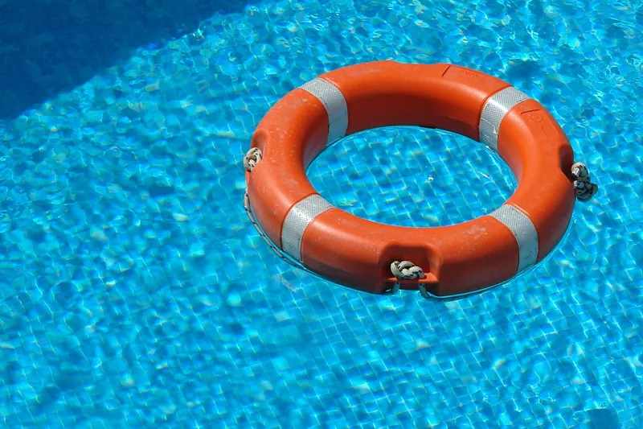
FloatSwim will continue to expand this Resources section over time. If you are a professional with publicly available water safety materials that align with these principles, check back for contact options as the platform grows.Swim Gear Essentials
The right gear doesn't replace supervision or lessonsbut it adds another critical layer of protection. Here's what every family should consider before heading to the water.
- Swim goggles: Help children see underwater, reducing panic and building confidence during lessons. Anti-fog lenses are a must.
- Swim caps: Protect hair from chlorine damage and keep hair out of eyes during lessons. Silicone caps last longer than latex.
- Life jackets: Always choose U.S. Coast Guard-approved life jackets sized for your child's weight. Inflatable toys and water wings are not safety devices.
- Ear plugs: Prevent swimmer's ear, especially for children who swim frequently or have ear tube history.
- Sunscreen: Water-resistant SPF 50+ applied 15 minutes before swimming. Reapply every 2 hours.
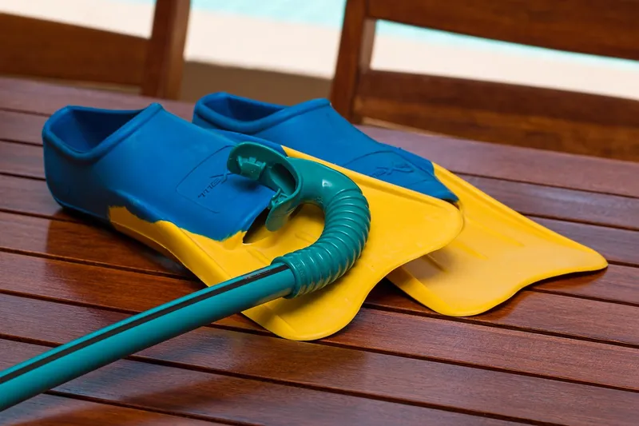
Gear works best as part of a layered approach: supervision + barriers + skills + equipment. No single product can prevent drowning on its own. See our Pool Safety Checklist for the full picture.CPR & First Aid Training
Knowing CPR can mean the difference between life and death in a drowning emergency. The American Heart Association estimates that immediate CPR can double or triple a drowning victim's chance of survival.
- Infant CPR vs. Adult CPR: The techniques differ significantly. Infant CPR uses two fingers for chest compressions; adult CPR uses two hands. Take a class that covers both.
- Where to learn: The American Red Cross and American Heart Association offer in-person and online courses starting around $25-35.
- How often: CPR certification is valid for 2 years. Skills fade quicklyconsider refresher practice every 6 months.
- Everyone should learn: Parents, babysitters, grandparents, older siblings, and anyone who supervises children near water.
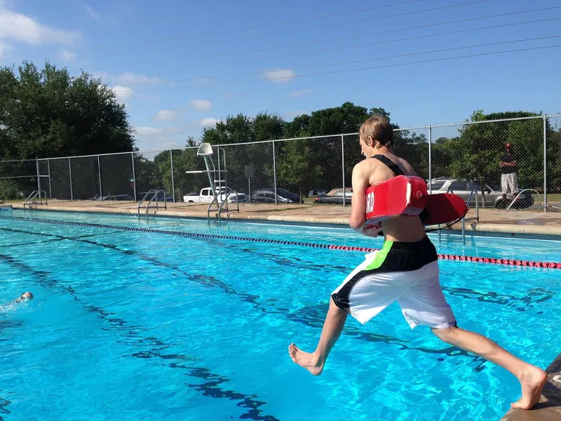
In an emergency: Call 911 first, then begin CPR immediately. Do not wait for professional help to arrive. Even imperfect CPR is better than no CPR.Infant Swim Lessons: What Parents Need to Know
Starting swim lessons early can dramatically reduce drowning risk. But knowing when to start, what approach to choose, and what to expect can be confusing for new parents.
- When to start: The American Academy of Pediatrics supports swim lessons starting at age 1. Some programs (like ISR) accept infants as young as 6 months.
- ISR vs. Traditional: Infant Swimming Resource (ISR) focuses on survival skills, teaching babies to roll onto their backs and float. Traditional lessons focus on stroke development and water comfort over time.
- What to expect: Infant lessons are typically 10 minutes per session, one-on-one with an instructor. Expect some crying. It's normal and temporary.
- Finding a program: Use our Swim Lesson Directory to find providers near you, including free and low-cost options.
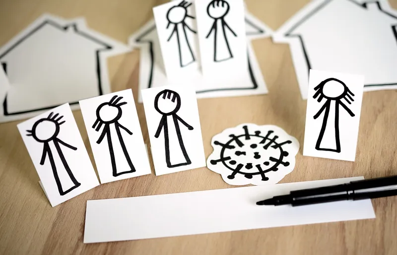
Key stat: Participation in formal swim lessons can reduce the risk of drowning by 88% among children ages 1-4 (National Institutes of Health). Early enrollment saves lives.Recommended Gear
These products are chosen for safety, durability, and value. Every item supports a safer experience in and around water.

Kids Swim Goggles (Anti-Fog)
Clear vision underwater builds confidence and reduces panic during lessons.
View on Amazon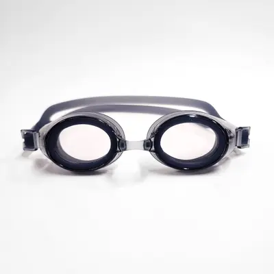
Prescription Swim Goggles
For swimmers who need corrective lensessee clearly without contacts.
View on Amazon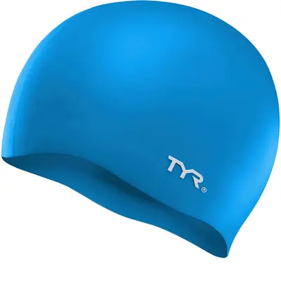
Silicone Swim Cap
Durable, comfortable, and protects hair from chlorine damage.
View on Amazon
Swim Cap for Long Hair
Extra-large waterproof cap designed to fit and protect longer hair.
View on Amazon
Kids Life Jacket (USCG Approved)
Coast Guard-approved for real safetynot a toy. Sized by child's weight.
View on Amazon
Pool Door Alarm
Alerts you when a door to the pool area opens. A critical layer of protection.
View on Amazon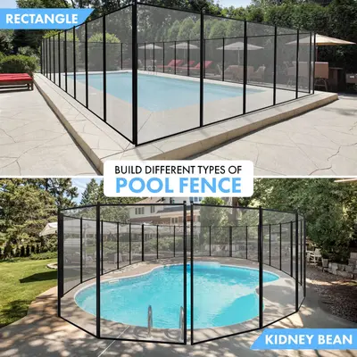
Removable Pool Fence
Four-sided barrier with self-closing gate. The #1 recommended pool safety measure.
View on Amazon
Kids Sunscreen SPF 50
Water-resistant, broad-spectrum protection. Apply 15 min before swimming.
View on AmazonSwim Ear Plugs (Kids)
Prevents swimmer's ear and keeps water out. Great for frequent swimmers.
View on AmazonFloatSwim is a participant in the Amazon Associates Program. Some links earn a small commission at no extra cost to you.